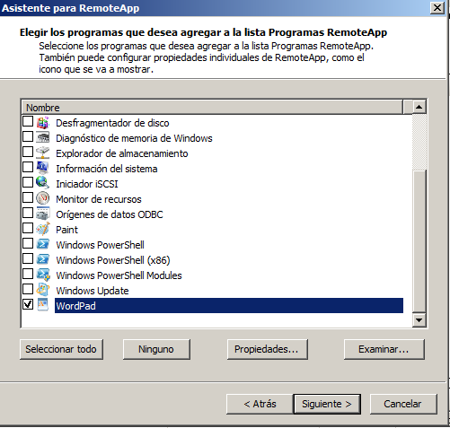
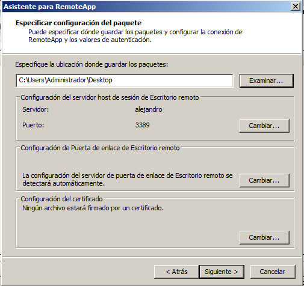
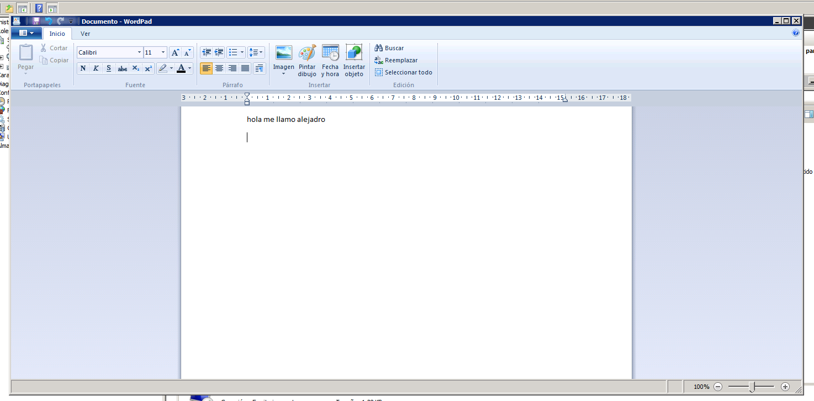
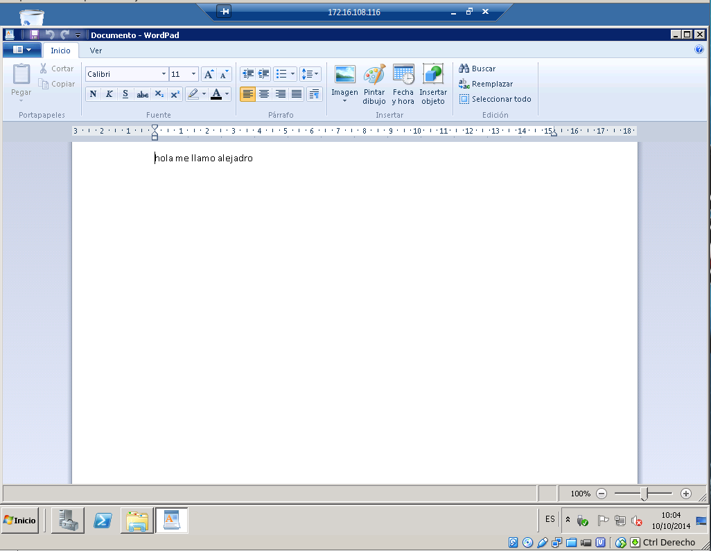

- Módulo: Administración de Sistemas Operativos
- Título del trabajo
- Componentes del grupo: Alejandro Garcia Yumar
- Curso Académico: 2013/2014
- Fecha de entrega: 10 de Octubre de 2014
El ejercicio consiste en instalar correctamente los programas de acceso remoto, que sirve para monitorizar otras maquinas desde otras, y hacerlos funcionar entre maquinas.
Se instalo el programa gratuito VNC para esta parte.


Se usaron programas que ya venian instalados en los sistemas operativos.


Se utilizaron los programas que se pueden instalar desde el sistema operativo.


Este programa sirve de la misma manera, solo que es con una aplicacion espacificada con anterioridad.
   